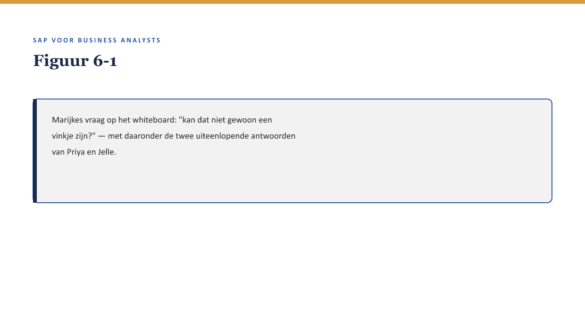
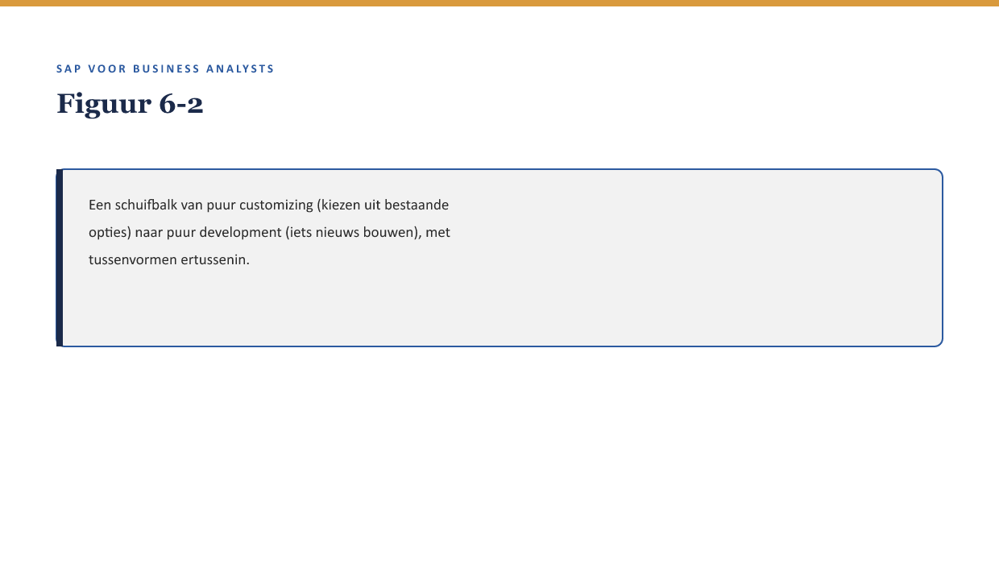
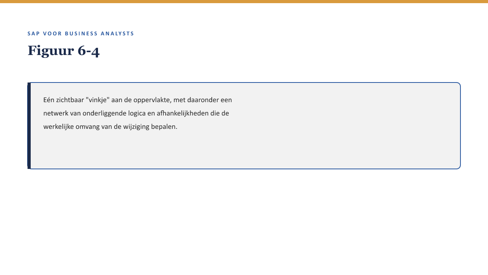

Deel 6 — Business logica & uitbreidingen
Slidedeck · Niveau 1 Fundamenten · Cursus SAP voor Business Analysts · Ductus
Slidetypen conform de Ductus-sjabloonfuncties: titleSlide, sectionSlide, bulletsSlide, statementSlide, quoteSlide, tableSlide, figureSlide, opdrachtSlide.
Slide 1 — titleSlide
Business logica & uitbreidingen Deel 6 · Niveau 1 Fundamenten Cursus SAP voor Business Analysts
Slide 2 — statementSlide
“Kan dat niet gewoon een vinkje zijn?”
Twee experts. Twee andere antwoorden.
Slide 3 — figureSlide

Slide 4 — bulletsSlide
Wat we vandaag doen
- Customizing versus development — een schuifbalk, geen knip
- User exits en BAdI’s — de vaste haakjes van het systeem
- Waarom “klein” zelden klein is
- Een wijzigingsverzoek dat de vraag vroeg stelt
Slide 5 — sectionSlide
Customizing versus development
Slide 6 — figureSlide

Slide 7 — quoteSlide
“Is dit configuratie of maatwerk” heeft zelden een eenduidig antwoord voordat iemand het heeft uitgezocht. De vraag zelf is wel altijd op tijd te stellen.
— Kernzin, reader §3.3
Slide 8 — opdrachtSlide
Opdracht 6.1 — Waar op de schuifbalk?
Drie wensen: customizing, grijs midden, of development? a. Een bestaand goedkeuringsproces aanzetten b. Volledig nieuwe premieberekening c. Bestaande optie plus klein stukje extra logica
Slide 9 — sectionSlide
User exits en BAdI’s
Slide 10 — figureSlide
Slide 11 — bulletsSlide
De ene vraag die telt
- Gebruiken we hier een voorzien uitbreidingspunt?
- Of is dit volledig los daarvan gebouwd?
- Het eerste is stabieler bij toekomstige updates
Slide 12 — opdrachtSlide
Opdracht 6.2 — De juiste vraag over een haakje
Priya zegt: “hiervoor gebruiken we een BAdI.” Welke vervolgvraag test de stabiliteit?
Slide 13 — sectionSlide
Waarom klein zelden klein is
Slide 14 — figureSlide

Slide 15 — bulletsSlide
Drie redenen
- Verborgen afhankelijkheden — gedeeld met andere processen
- Testomvang — breder dan de wijziging zelf suggereert
- Onderhoudslast — zichtbaar pas bij de volgende update
Slide 16 — opdrachtSlide
Opdracht 6.3 — Klein of niet klein?
Marijkes vinkje raakt drie andere processen. Beschrijf met de drie redenen waarom dit minder klein is dan gedacht.
Slide 17 — sectionSlide
Een wijzigingsverzoek formuleren
Slide 18 — quoteSlide
“Wij willen [gewenste uitkomst]. Ik weet niet of dit binnen bestaande configuratie past of een uitbreiding vergt — kunnen jullie dat samen inschatten voordat we een planning maken?”
— Patroon, reader §6
Slide 19 — opdrachtSlide
Opdracht 6.4 — Een wijzigingsverzoek herschrijven
“Kunnen we gewoon een instelling maken zodat deze uitzondering makkelijker aan te passen is?” — herschrijf met het patroon uit reader §6.
Slide 20 — opdrachtSlide
Opdracht 6.5 — Priya en Jelle aan het woord (rollenspel)
Speel het gesprek verder uit. Wat doet Sanne wél, en wat laat ze bewust aan Priya en Jelle over?
Slide 21 — bulletsSlide
Samenvatting in vijf zinnen
- Customizing en development zijn geen knip maar een schuifbalk, met een grijs midden
- User exits en BAdI’s zijn voorziene haakjes — stabieler dan uitbreidingen daarbuiten om
- “Klein” wordt vaak niet klein door verborgen afhankelijkheden, testomvang en onderhoudslast
- De BA houdt de organisatiebehoefte scherp, niet de technische inschatting
- Een goed wijzigingsverzoek stelt de configuratie/maatwerk-vraag vroeg en open
Slide 22 — titleSlide
Volgende deel Integratie & interfaces Deel 7